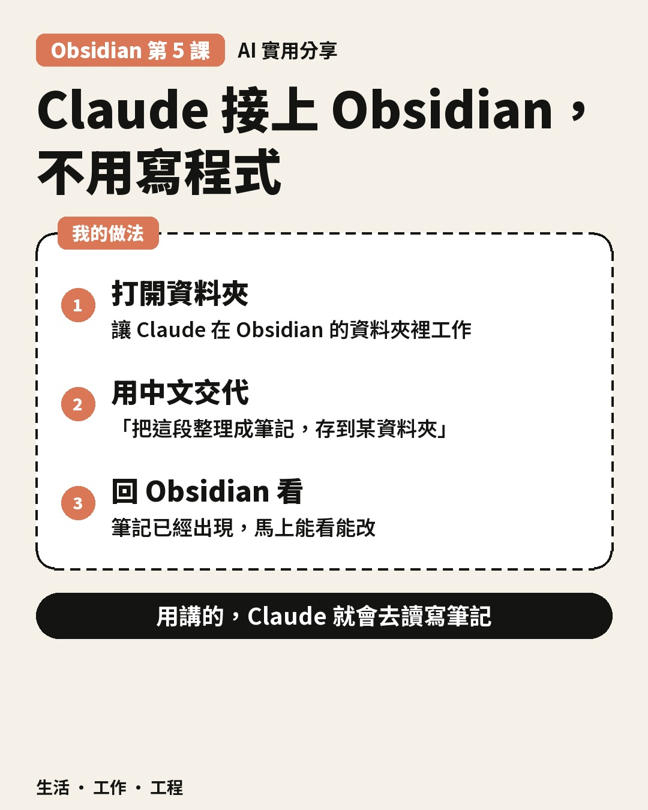

Threads｜王啟樺：ChatGPT、Notion、Codex 與 Obsidian 的知識資料流
一句話摘要
不必把 Notion 與 Obsidian視為二選一：作者主張 Notion 負責捕捉，Obsidian 負責本地知識工作，關鍵是設計資料流與授權邊界。
貼文重點
王啟樺提出「ChatGPT → Notion → Localize → Codex → Obsidian」：手機對話後保存想法，回到電腦將 Notion 新內容取回，再分類、聚類、整理 FAQ 或卡片。這是作者提出的工作流，而非已驗證的一鍵成品或自動同步服務。上圖是原貼文公開影片的壓縮首格縮圖，並非影片逐字稿；本次未取得逐字稿，也未下載完整影片，不能根據影片畫面推論其完整內容。頁面「相關串文」是推薦區，不當作本文作者續文。
官方文件核對與限制
- **匯出**：Notion 匯出說明支援 Markdown & CSV、HTML 等格式；資料庫、附件與頁面轉成檔案不保證維持原有結構、權限、視圖或雙向可逆，匯出可做快照但不是自動增量同步。
- **API 授權**：Notion API 授權文件說明可使用整合 token、個人 token 或 OAuth；內部連線需先將頁面分享給連線，權限依類型及設定而異。Codex 不會天然取得 Notion，必須另行授權連線或提供已匯出的本機資料，且限制檔案與網路權限。
- **ChatGPT 讀寫**：Notion MCP 官方文件列出 ChatGPT 等 MCP 用戶端，並說明 Notion MCP 可搜尋、建立及編輯頁面與管理資料庫；是否實際可以寫入，仍取決於所選整合、帳號方案、管理員政策、授權範圍與該介面支援的操作。不能把所有 ChatGPT 的 Notion 連線視為相同，也不能保證手機一鍵寫入。無寫入功能時可手動複製或使用經授權的其他整合。本次未登入或實測任何帳號；OpenAI 說明頁受存取限制，故不對特定 ChatGPT 內建連接器的寫入能力作斷言。
- **本機 Markdown**：Obsidian 官方說明將 vault 作為本機資料夾管理；筆記使用 Markdown 檔。AI 仍需得到對該資料夾的檔案存取權，且本機優先不代表不會經同步服務或雲端模型傳送。
可落地的安全流程
- 先選小範圍資料庫與測試 vault，確認敏感資料是否適合交由 ChatGPT、第三方連線或雲端模型處理；遮蔽個資與憑證，依需要限制連線頁面並保留撤銷權限的方法。
- 從 Notion 人工匯出備份，或經明確授權以 API／MCP 讀取；記錄頁面 ID、來源網址、修改時間、檔案雜湊與同步水位。保留原始匯出及附件，不要將 token 放進 Markdown、Git 或公開站。
- 先採單向 Notion → 暫存區 → Obsidian，先預覽差異，再人工核准；依穩定 ID 去重，分頁讀取並驗證附件與連結。用本地與遠端最後同步版本比對：兩邊均已修改時保留兩份、標記衝突，勿以時間戳直接覆蓋；刪除先標記待確認，不自動刪本機檔。
- 轉換前備份並試還原；資料庫關聯、公式、權限、嵌入內容、區塊類型及附件可能無法完整映射到 Markdown。保留來源 URL 和原始資料，人工抽查，不將有損轉換當作可逆備份。
- Codex 對授權範圍內的暫存副本提出分類、FAQ 與卡片草稿；人工審核差異、來源及隱私，再寫入 vault。先做好版本備份，必要時可回滾。
2026-11-03 補充｜小施實測室：Claude 桌面 Code 讀寫 Obsidian

這是同一知識流程中的另一個獨立案例，而非王啟樺貼文續篇。小施實測室描述，在 Claude 桌面版的寫程式模式打開 Obsidian 資料夾，用中文交代整理並儲存筆記，再回 Obsidian 看結果。這是作者經驗，不代表本次已連接或實測。主帖可見一張教學圖卡，無明顯個資或人物；上圖為公開壓縮版本。主帖下「相關串文」是推薦區，即使同作者的前一天貼文也不是本文續文。
作者本人在留言中詢問別人模板細節；另一位使用者分享以 Copilot plugin 接 Claude、製作日誌模板及 Garmin 外掛整合等經驗，屬第三方個人經驗，不是作者的主帖實作，也不是官方確認的預設功能。
### 官方核對：適用範圍與費用
- Anthropic 的桌面快速入門明列 Code 分頁、選 Local 與 Open folder；目前文件列 Pro、Max、Ultra、Team、Enterprise 訂閱，並非免費方案皆可用。桌面 Code 內建 Claude Code，不必另外安裝 CLI；macOS、Windows 與 Linux beta 的條件、版本及組織政策可能不同。Chat、Cowork、Code、SSH 與 Cloud 不是相同模式，不能把本機路徑假設套用到其他模式。
- Obsidian 官方說 vault 是本機資料夾、筆記為 Markdown 純文字，外部更改會刷新；還可能使用同步服務。本機檔案不等於模型本機運算：Anthropic 文件說本機 Code 工作階段仍把對話及程式碼上下文送往設定的模型供應商，預設 Anthropic API。送出什麼資料、保存及訓練政策依帳號、供應商及設定確認。
- Pro、Max、Ultra 訂閱包含用量但有使用限制；額度、模型及額外用量以帳戶及現行方案為準，額度耗盡不代表必然免費或自動加購。API／第三方供應商可能按 token 或各自合約計費，與訂閱不是同一帳單；企業及團隊方案依合約與管理員規則。官方：
- https://code.claude.com/docs/en/desktop-quickstart
- https://code.claude.com/docs/en/desktop
- https://code.claude.com/docs/en/costs
- https://help.obsidian.md/Files+and+folders/How+Obsidian+stores+data
### 安全審核與備份建議（僅建議，未變更設定）
- 先複製少量無敏感資料到獨立測試 vault 或暫存資料夾，避免直接給整個個人 vault、家目錄、憑證及私人資料；核對實際選擇的 Local 環境、資料夾、額外目錄、作業系統權限與管理政策。目錄選擇不是絕對沙箱，shell、連接器、外掛可能擴大存取或外傳。
- 優先手動審核模式，對寫入、刪除、批次改名、命令及網路動作逐項核准；先要求提出計畫與 diff，不啟用 bypass 或自動批准。筆記與網頁內指令可能是提示注入，不應凌駕使用者意圖；檢查外掛、MCP 與第三方連線資料流與撤權方式。
- 修改前建立完整、可還原的版本備份：包括 Markdown、附件與必要的 .obsidian 設定；另存獨立位置並定期試還原。同步不是備份；Obsidian File Recovery 可以補救部分文字變更，但不能取代完整備份。敏感內容不要放入公開 Git。
- 先產生草稿，人工檢查 diff、連結及來源再合併；若雙邊都改過就保留兩份並標記衝突，刪除須人工確認。不要把 Codex／Notion 工作流說成已連接。
來源：原始分享 https://www.threads.com/share/BAXoXF7XmE ；固定貼文 https://www.threads.com/@shih.testlab/post/DfQwE_iH0ho 。查核日期 2026-11-03；功能及方案可能變動。
2026-11-08 補充｜不加班社畜：Claude Code 自動整理並關聯 297 頁筆記
這是不同作者的獨立案例，並非上方 Threads 貼文續篇。作者稱以 Claude Code 將資料收入 Obsidian vault、撰寫摘要並補上筆記連結；297 頁為概念 36、實體 5、來源 254、目錄與紀錄 2，另有 527 頁實驗紀錄未計入；最早頁面建立於 2026-04-16。這些數字及自動化成果是作者自述，不是本次對其 vault 的稽核。
公開文案說作者在 Mac 實際使用，Windows 未測；起手包含資料夾、CLAUDE.md 規則與三個日常指令，作者說要留言後私訊。正文沒有起手包 URL；留言區要求登入，本次未登入、留言或索取，因此未取得 Notion 起手包，也未核對其完整指令、成本或品質。作者稱需 Pro 以上並安裝 Claude Code，這是其特定教程的門檻，不應推論為 Claude Code 所有使用方式唯一選項。
媒體狀態：公開 DASH 影片軌長 20.6 秒，本次每秒抽一格檢視，畫面可見關聯圖、資料夾與規則檔示意及三個指令畫面；抽樣不是逐格完整觀看，未聆聽音軌，亦無完整逐字稿。作者說圖為加速實錄、旁白為 AI 合成；以上均為作者說法。圖片為原 Reel 的公開壓縮縮圖，已檢視未見個資或憑證，重用授權未確認；不是整段影片證據。
### 官方技術與安全邊界
- Obsidian vault 是本機資料夾及 Markdown 檔，內部連結與 Graph view 可呈現筆記連結；圖上有連線不證明關聯語意正確、摘要有依據或每頁均已經人工驗證。
- Anthropic 文件指出 CLAUDE.md 是持續指示檔；它不保證 agent 遵守每條規則或自動排程。Claude Code 可依不同介面使用訂閱、Console 或支援的第三方供應商；方案額度、API 費用及實際供應商條款各不相同，非免費或無限保證。
- 本機 vault 不等於本機模型或資料不外傳。正式使用前先以去識別少量資料和獨立測試 vault 進行，限制讀寫、外掛、網路與 shell 權限；先備份 Markdown、附件和必要設定並試還原。將來源文字視為不可信，避免提示注入；讓 agent 先輸出草稿與 diff，再人工核對引用、摘要、連結、重名與未解析連結，批次改名或刪除須確認。
- 此次只查公開文件與檢視抽樣，沒有安裝、登入、修改使用者現有 vault、設定或實際接通工具。
來源與查核日期 2026-11-08：
- 原始分享：https://www.facebook.com/share/r/1A9uQeGHJL/?mibextid=wwXIfr
- Reel：https://www.facebook.com/reel/3646259998883677
- Obsidian 資料儲存：https://help.obsidian.md/Files+and+folders/How+Obsidian+stores+data
- Obsidian 連結與圖：https://help.obsidian.md/links 、https://help.obsidian.md/plugins/graph
- Claude Code 指示、使用方式、費用及安全：https://code.claude.com/docs/en/memory 、https://code.claude.com/docs/en/overview 、https://code.claude.com/docs/en/costs 、https://code.claude.com/docs/en/security
相關既有文章
[AI 筆記工具比較：Notion、Obsidian 等五款工具](2026-08-14-bnext-ai-notes-tools-notion-obsidian-heptabase-gemini-kuse.html)是較廣的產品比較；本篇是新的資料流與同步安全案例，並非同一篇重複貼文。